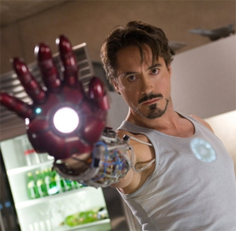
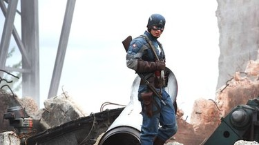
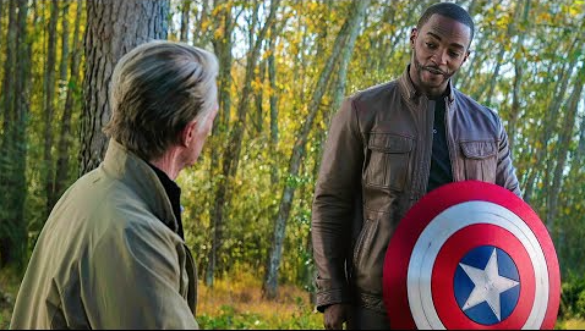
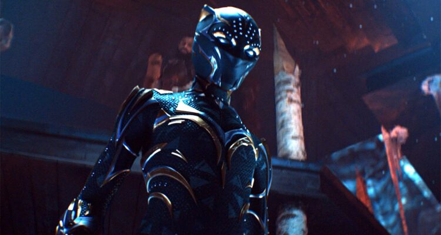

Marvel Characters
Major Characters
-
Iron Man (Tony Stark)

First appearance: Iron Man (2008)

Genius billionaire Tony Stark is one of the founding members of the Avengers and a central figure in the Marvel Cinematic Universe (MCU). As a billionaire genius, inventor, and industrialist, Tony Stark transforms from an arrogant weapons manufacturer to a selfless hero, thanks to his high-tech Iron Man suit. He is known for his brilliant mind, creating advanced technology, including his iconic Iron Man suit powered by the Arc Reactor. Tony is dedicated to using his wealth and intelligence for the greater good, funding initiatives like the Avengers and technological advancements that benefit humanity. While captured by terrorists, Tony builds the first version of the Iron Man armor, marking his transformation into a hero.
-
Captain America (Steve Rogers)

First Appearance: Captain America: The First Avenger (2011)

Super-soldier Steve Rogers is the embodiment of courage, selflessness, and leadership in the Marvel Cinematic Universe. Born during the 1920s, Steve Rogers transforms from a frail but determined man into a super-soldier after receiving the experimental Super Soldier Serum during World War II. He is a symbol of hope and justice, standing as the moral compass of the Avengers. Steve volunteers for a secret military project and is transformed into the world’s first Super Soldier, wielding an indestructible vibranium shield. As a natural leader, Steve leads the Avengers into numerous battles. At the conclusion of Avengers Endgame, Steve returns the Infinity Stones to their proper places in time, and, in a heartfelt moment, passes on his shield and mantle to Sam Wilson (Falcon).
 -
Black Panther(Shuri)

Character Overview
Shuri, played by Letitia Wright, is the current Black Panther and the younger sister of T'Challa played by the late Chadwick Boseman. As a technological genius, she's responsible for many of Wakanda's most advanced innovations.
Origin and Developmet
Initially introduced as the head of Wakandan technology and T'Challa's witty sister, Shuri's role expanded following the tragic passing of Chadwick Boseman. She stepped into the role of Black Panther to protect Wakanda and honor her brother's legacy.
Key Films and Events
- "Black Panther" (2018): Debut as T'Challa's tech-savvy sister.
- "Avengers: Infinity War" (2018): Attempts to remove the Mind Stone from Vision.
- "Avengers: Endgame" (2019): Joins the battle against Thanos.
- "Black Panther: Wakanda Forever" (2022): Becomes the new Black Panther.
Current Status
As the new Black Panther, Shuri faces the dual challenges of leading Wakanda and protecting it from external threats. Her journey involves balancing her scientific mind with the spiritual aspects of the Black Panther legacy.